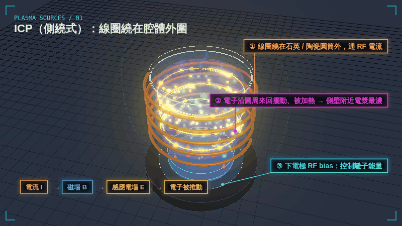
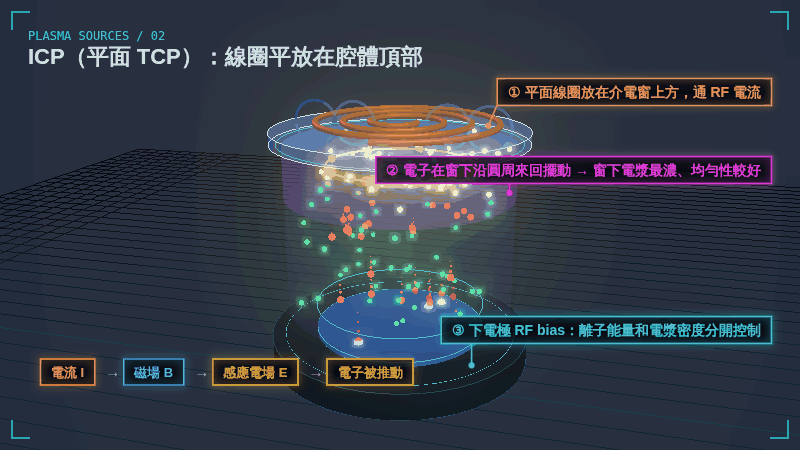
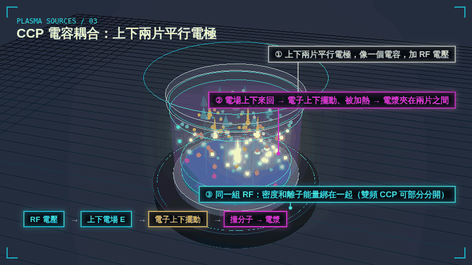
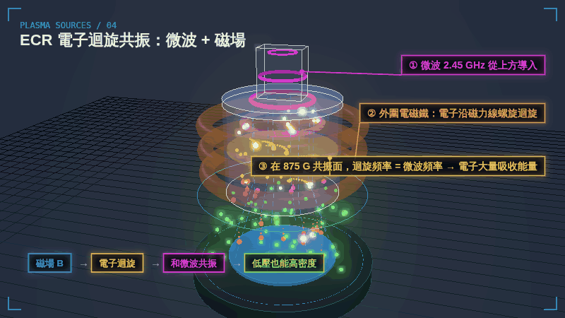
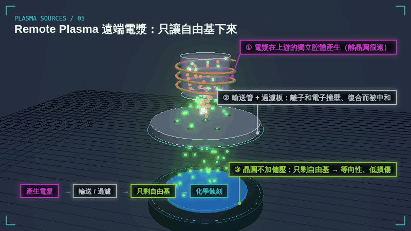
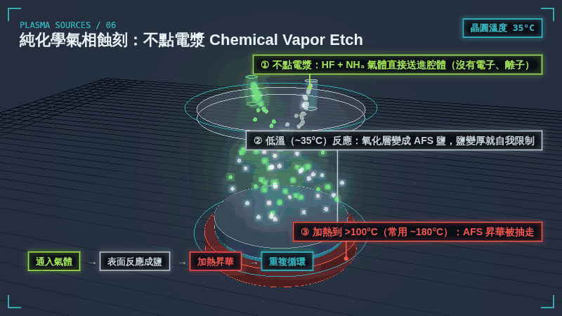

電漿蝕刻 Plasma Etching →
電子撞分子、鞘層、等向性與非等向性、選擇比，以及 radical etch 怎麼濾掉離子。
PLASMA SOURCES / 3D GIF
所有電漿源都在做同一件事：想辦法把能量交給電子，讓電子去撞分子、點燃電漿。差別只在「怎麼推電子」和「電漿在哪裡最濃」。這一頁用 6 張 3D 動畫 GIF 一次對照：ICP 的兩種線圈擺法、CCP 的平行電極、ECR 的微波加磁場、只讓自由基下來的 Remote plasma，最後再看完全不點電漿的純化學氣相蝕刻。
OVERVIEW
| 電漿源 | 怎麼推電子 | 電子運動方向 | 電漿密度 | 離子能量控制 | 典型用途 |
|---|---|---|---|---|---|
| ICP（側繞式 / TCP） | 線圈的感應電場 | 沿圓周來回 | 高 | 下電極 bias，獨立控制 | 導體蝕刻（Si、poly、金屬） |
| CCP | 兩片電極間的 RF 電場 | 上下來回 | 中 | 和密度綁在一起（雙頻可部分分開） | 介電層蝕刻（氧化層、氮化層） |
| ECR | 微波 + 磁場共振 | 沿磁力線螺旋迴旋 | 高（極低壓） | 下電極 bias | 低壓高密度製程 |
| Remote | 在上游腔體產生 | （晶圓處幾乎沒有離子） | 晶圓處只剩自由基 | 不加偏壓 | 灰化、表面處理、等向性蝕刻 |
| 純化學（無電漿） | 不需要（沒有電漿） | — | 沒有電漿 | 沒有離子 | 氧化層 recess、預清洗 |
一句話記憶：CCP 是「電場上下推」，ICP 是「感應電場繞圈推」，ECR 是「磁場讓電子轉圈、微波共振加能量」，Remote 是「在遠處產生、只送自由基下來」，純化學則「完全不用電漿，靠低溫反應 + 加熱昇華」。
SOURCE 01

線圈繞在石英或陶瓷圓筒外面，通 RF 電流。線圈的磁場沿著腔體軸心上下穿過，磁場一變化，就在貼近側壁的地方感應出一圈環形電場，電子被推著沿圓周來回擺動、加熱，所以側壁附近的電漿最濃，再往中心擴散。
| 電子怎麼被加熱 | 感應電場（沿圓周） |
|---|---|
| 電漿最濃處 | 貼近側壁的一圈 |
| 優點 | 高密度、低壓；線圈不碰電漿 |
| 限制 | 晶圓越大，中心與邊緣越難一致 |
SOURCE 02

把線圈改成平放在腔體頂部的介電窗上方。原理相同：電流 → 磁場 → 感應電場 → 電子沿圓周擺動，只是加熱區變成窗下的一層，往下擴散到晶圓，均勻性比較好，所以 300 mm 導體蝕刻機多採用這種結構。下電極另外接一組 RF bias，離子能量和電漿密度可以分開控制。
| 電子怎麼被加熱 | 感應電場（沿圓周） |
|---|---|
| 電漿最濃處 | 介電窗下方一層 |
| 優點 | 高密度、均勻性好；密度與離子能量分開控制 |
| 典型用途 | 矽、多晶矽、金屬等導體蝕刻 |
SOURCE 03

上下兩片平行電極就像一個電容，加上 RF 電壓後，電場在兩片之間上下來回，電子跟著上下擺動、被加熱，電漿就夾在兩片電極之間。結構簡單、大面積均勻，但同一組 RF 同時決定電漿密度和離子能量，兩者綁在一起；雙頻 CCP（高頻管密度、低頻管離子能量）可以部分分開。
| 電子怎麼被加熱 | 上下方向的 RF 電場 |
|---|---|
| 電漿最濃處 | 兩片電極之間 |
| 優點 | 結構簡單、均勻、離子能量高 |
| 典型用途 | 氧化層、氮化層等介電層蝕刻 |
SOURCE 04

外圍的電磁鐵產生強的靜磁場，電子被磁場逼著沿磁力線螺旋迴旋。從上方導入 2.45 GHz 微波，在磁場強度約 875 G 的地方，電子迴旋的頻率剛好等於微波頻率（共振），電子在這一層大量吸收能量，所以在很低的壓力下也能得到高密度電漿。
| 電子怎麼被加熱 | 微波 + 磁場共振（875 G ↔ 2.45 GHz） |
|---|---|
| 電漿最濃處 | 共振面附近 |
| 優點 | 極低壓也能高密度 |
| 限制 | 需要大型電磁鐵，設備複雜 |
SOURCE 05

電漿在上游的獨立腔體產生，再往下輸送到晶圓。途中離子和電子撞到管壁、彼此復合，或被接地的過濾板中和，抵達晶圓的只剩自由基；晶圓也不加偏壓。所以它是純化學、等向性、低損傷的處理方式，常用於灰化、表面處理和選擇性移除。
| 電子怎麼被加熱 | 在上游腔體（ICP 或微波） |
|---|---|
| 到晶圓的粒子 | 幾乎只有自由基 |
| 優點 | 低損傷、選擇比高、等向性 |
| 典型用途 | 灰化、表面處理、等向性蝕刻 |
SOURCE 06

完全不點電漿：把 HF 和 NH₃ 等反應氣體直接送進腔體，在約 35°C 的低溫下吸附在氧化層表面反應，把氧化層變成固態的鹽（AFS）。鹽變厚會擋住反應，蝕刻自己停下來（自我限制）；接著把晶圓加熱到 100°C 以上（常用約 180°C），讓鹽昇華抽走。重複「反應 → 加熱」的循環，就能精準控制氧化層往下退多少。
| 電子怎麼被加熱 | 不需要（沒有電漿） |
|---|---|
| 到晶圓的粒子 | 中性的反應氣體分子 |
| 優點 | 零電漿損傷、選擇比極高、深度好控制 |
| 典型用途 | 氧化層 recess、預清洗、去原生氧化層 |
RELATED
電子撞分子、鞘層、等向性與非等向性、選擇比，以及 radical etch 怎麼濾掉離子。
Remote plasma 實際拿來做什麼：Ash、表面處理、Poly / OX recess 與 AFS。
動畫為教學用示意：RF 與微波的頻率、粒子數量與尺寸都經過放慢或簡化，結構為通用示意，並非特定廠牌或機台。網頁上顯示的是 800×450 的預覽；按「下載 1080P GIF」可取得 1920×1080 的原檔，循環播放、第一格就是完整畫面，可直接放進簡報。